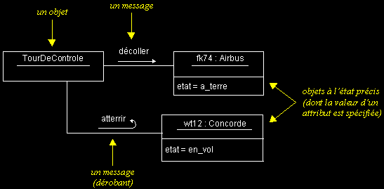
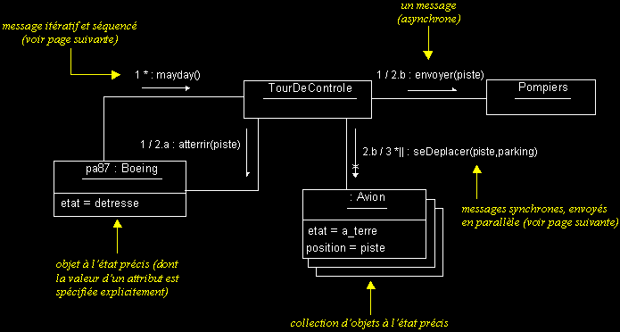
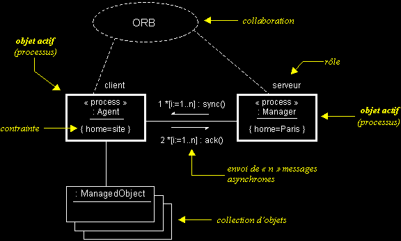

COLLABORATION ET MESSAGES
q
Diagramme de collaboration
- Les diagrammes de collaboration montrent des interactions entre objets (instances de classes et acteurs).
- Ils permettent de représenter le contexte d'une interaction, car on peut y préciser les états des objets qui interagissent.
Exemples :


q Synchronisation des messages
- UML permet de spécifier de manière très précise l'ordre et les conditions d'envoi des messages sur un diagramme dynamique.
- Pour chaque message, il est possible d'indiquer :
- les clauses qui conditionnent son envoi,
- son rang (son numéro d'ordre par rapport aux autres messages),
- sa récurrence,
- ses arguments.
- La syntaxe d'un message est la suivante :
[pré "/"] [["["cond"]"] [séq] ["*"["||"]["["iter"]"]] ":"] [r ":="] msg"("[par]")"
- pré : prédécesseurs (liste de numéros de séquence de messages séparés par une virgule ; voir aussi "séq").
Indique que le message courant ne sera envoyé que lorsque tous ses prédécesseurs le seront aussi (permet de synchroniser l'envoi de messages).
- cond : garde, expression booléenne.
Permet de conditionner l'envoi du message, à l'aide d'une clause exprimée en langage naturel.
- séq : numéro de séquence du message.
Indique le rang du message, c'est-à-dire son numéro d'ordre par rapport aux autres messages. Les messages sont numérotés à la façon de chapitres dans un document, à l'aide de chiffres séparés par des points. Ainsi, il est possible de représenter le niveau d'emboîtement des messages et leur précédence.
Exemple : l'envoi du message 1.3.5 suit immédiatement celui du message 1.3.4 et ces deux messages font partie du flot (de la famille de messages) 1.3.
Pour représenter l'envoi simultané de deux messages, il suffit de les indexer par une lettre.
Exemple : l'envoi des messages 1.3.a et 1.3.b est simultané.
- iter : récurrence du message.
Permet de spécifier en langage naturel l'envoi séquentiel (ou en parallèle, avec "||") de messages. Notez qu'il est aussi possible de spécifier qu'un message est récurrent en omettant la clause d'itération (en n'utilisant que "*" ou "*||").
- r : valeur de retour du message.
Permet d'affecter la valeur de retour d'un message, pour par exemple la retransmettre dans un autre message, en tant que paramètre.
- msg : nom du message.
- par : paramètres (optionnels) du message.
Exemples :
3 : bonjour()Ce message a pour numéro de séquence "3".
[heure = midi] 1 : manger()
Ce message n'est envoyé que s'il est midi.
1.3.6 * : ouvrir()
Ce message est envoyé de manière séquentielle un certain nombre de fois.
3 / *||[i := 1..5] : fermer()
Représente l'envoi en parallèle de 5 messages. Ces messages ne seront envoyés qu'après l'envoi du message 3.
1.3,2.1 / [t < 10s] 2.5 : age := demanderAge(nom,prenom)
Ce message (numéro 2.5) ne sera envoyé qu'après les messages 1.3 et 2.1, et que si "t < 10s".
1.3 / [disk full] 1.7.a * : deleteTempFiles()
1.3 / [disk full] 1.7.b : reduceSwapFile(20%)Ces messages ne seront envoyés qu'après l'envoi du message 1.3 et si la condition "disk full" est réalisée. Si cela est le cas, les messages 1.7.a et 1.7.b seront envoyés simultanément. Plusieurs messages 1.7.a peuvent être envoyés.
q Objets actifs (threads)
- UML permet de représenter des communications entre objets actifs de manière concurrente.
- Cette extension des diagrammes de collaboration permet notamment de représenter des communications entre processus ou l'exécution de threads.

|
|
|